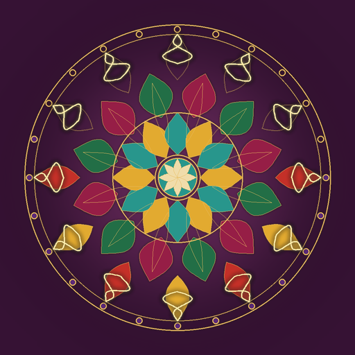

<- all projects

Mandala Loom
PC
Volume
Live
Draw one line. The loom weaves it twelve times.
At the Night Bazaar of Seven Gates stands a loom that weaves whatever you draw on it, around and around. Its master has vanished, leaving you, her apprentice, a stall, a bag of silk and an unfinished mandala with seven dark rings. Take commissions from merchants, draw strokes that repeat around the circle 6 to 18 times, trace the faint gold guide and fill spaces from each gate's palette. Win the trust of each gate and its ring glows again. The last ring shows where she went. 56 commissions at seven gates, a pattern book of real plates from The Grammar of Ornament and six brushes.